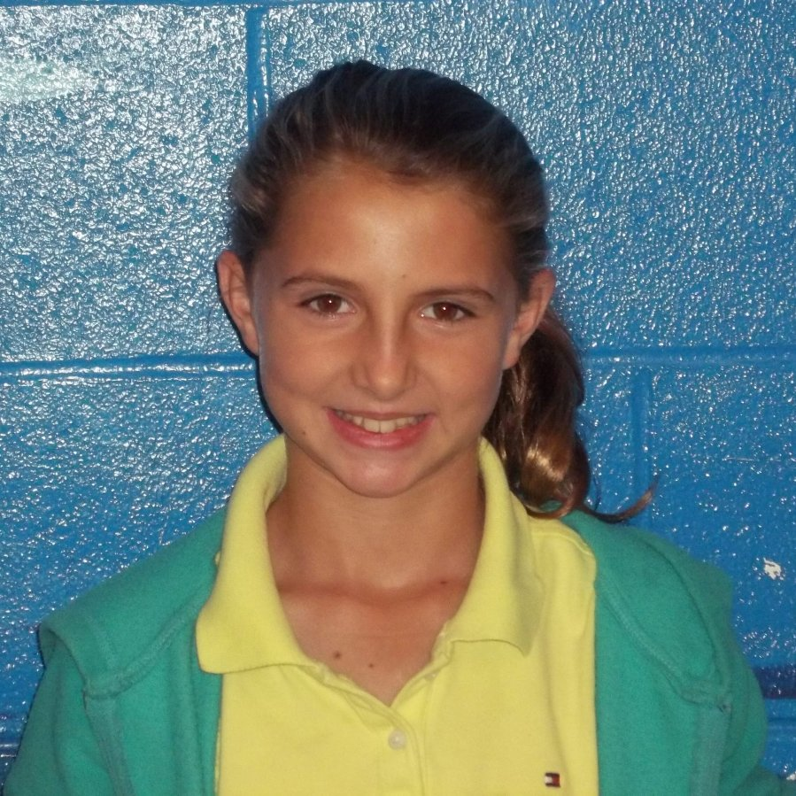
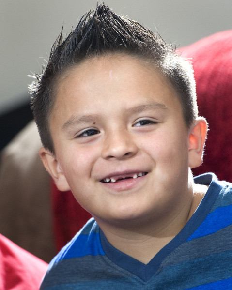
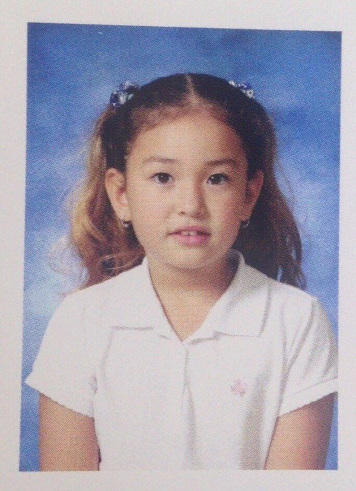
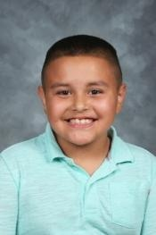
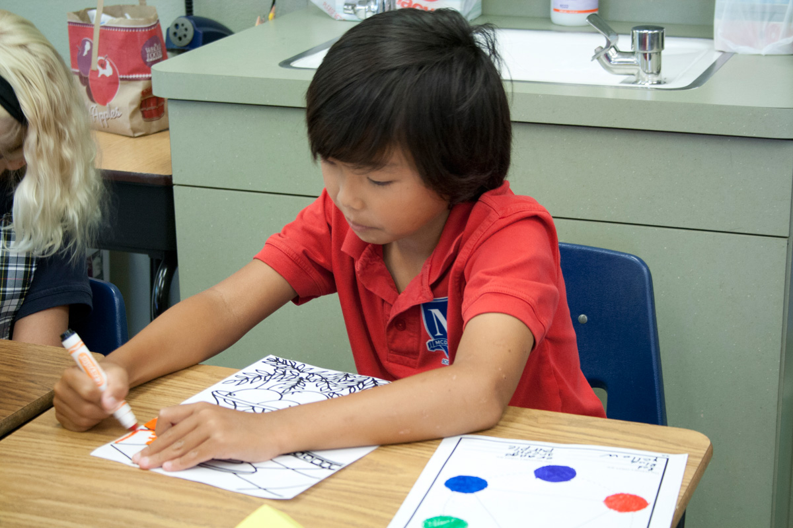
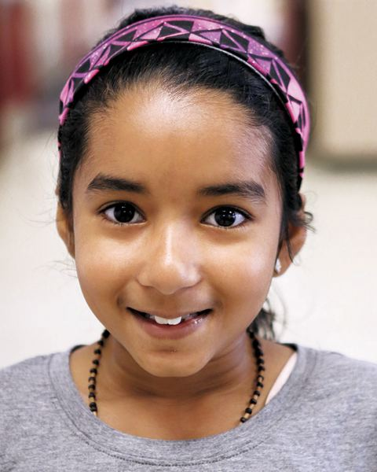
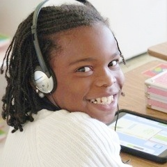
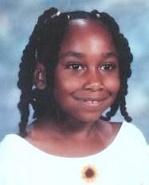

Constantly moving
Disturbed students around him
Raises his hand to answer teacher’s questions, but couldn’t answer it
Has difficulty staying on task
Enjoys peers’ attention
Problems are behavioral, not academic
Self-conscious about reading ability
Reading below grade level
Has difficulties with retelling passages he reads
Has high listening comprehension
Adam_4th
Does not participate in whole-class activities
Distracted during learning and activity time
Raises hand to answer teacher questions, but is discouraged when she isn’t chosen to answer aloud
More engaged in class after lunch
Gets bored with “Ticket to Read” computer activity
Has trouble listening to and following directions
Says she likes to read
Has some of the skills necessary for early literacy development
Low phonological awareness
Low letter-sound correspondence awareness
Was not in school until Kindergarten
Amanda_Kindergarten

Speaks very quietly
Does not raise hand to share out very often
New to the school
Has difficulty paying attention in class
Goes to a reading mentor each day to help improve her reading skills and bring her up to on-level
Listening comprehension skills are greater than reading comprehension skills
Apple_3rd

Constantly moving
Does not speak out or engage in discussion until a picture is shown – then he’s very engaged
Squints left eye as he reads
Has trouble paying attention
Is fond of reading, but would prefer to play outside
Wants to work hard and improve reading skills
Loves one-on-one interactions with teacher candidate
Billy_1st

Gets distracted easily
Seems to be shy
Uses decoding strategies to sound out unfamiliar words
Engages more with pictures than text
Intimidated to read in front of peers
Knows all her consonant digraphs
Gains more confidence in reading as she practices
Estrella_1st

Goes to pull-out ESOL classroom with three other students
Easily distracted
Does not distract others in the class since he’s fairly quiet
Sometimes tries to “sneak” and have bad behavior
Is not consistently fluent when he reads
Likes reading books for fun
Uses pictures to understand stories
Has trouble with reading comprehension
Sight word knowledge is on point with grade level expectations
Finn_2nd
Fidgety and talkative during class time
Very social
Has trouble staying focused
Pouts easily
Rarely finishes his work
Lives with grandmother and several cousins
Homework takes a long time for him to complete
Capable of concentrating and reading in school, but this has not been expected of him – so he doesn’t
Wants to read self-selected texts
Not motivated to read – especially at home
Teacher believes he could be on a 4th grade reading level, but he doesn’t want to work hard at reading
Joe_3rd

Gets distracted easily
Has low background knowledge to support reading
Raises hand to answer questions
Reluctant to participate in classroom learning
Needs constant hands-on learning opportunities
Believes writing is his favorite subject in school, even though he is not very productive during writing time
Is in the emergent reader stage
Joseph_Kindergarten
Frequently raises hand to volunteer
Struggles to read long numbers
Gets distracted and disturbs others around her during classroom lessons
Parent meeting resulted in better behavior
Distracted during independent reading time
Enjoys working with teacher candidate
Self-corrects as she reads
Needs to work on fluency and expression as she reads
Needs sight word practice
Julia_4th
Uses finger to guide him during reading
Does not ask for help
Struggles to decode consonant digraphs
Struggles with blending sounds together – especially in the middle of a word
Handwriting is sloppy
Misspells many words when he writes, even if he is copying the words
Skips sight words when reading
Is reading below level and receives extra instruction from the reading coach
Loves to learn new facts
Does not like to read aloud
Claims to get headaches if he reads too close to the text
Has good comprehension skills
Julio_3rd

Raises her hand to answer questions in class
Does not speak out of turn
Listens attentively in class
Attentive to classroom rules and admonishes ones who break them
Avoids text, but “reads” pictures during independent reading time
Eager to learn
Below grade level in reading and writing
Needs to read ‘good fit’ books
Has extreme mood swings
Prefers self-selected to teacher-selected books for independent reading
Katie_1st

Happy
English Language Learner
Gets distracted when he’s supposed to be working
Can read one book by himself
Loves to listen when someone reads aloud
Needs to work on learning the alphabet
Immersed in literacy at home
Liam_Kindergarten

Struggles to stay on-task and focus
Easily distracted
Uninterested in classroom lessons
Wants attention
Doesn't choose to participate in class work
Uninterested in reading and writing
Struggles to decode words
Teacher feels he has a lot of potential, but isn't meeting it
Reads below grade 4th grade level
Is interested in reading and wants to improve, but doesn't know how
Teacher feels he's motivated to learn to read better
Happy to work with the teacher candidate
Comprehension is good
Seems to have a limited vocabulary
Works with a tutor twice a week
Nathan_4th

Appears to be inattentive, even when she’s paying attention
Gets bored during classroom lessons
Works hard when she has teacher attention
Seems unsure of her responses and needs to check in with an adult to be sure her answers are correct
Wears glasses – but mostly forgets them
Seems indifferent to reading
Talon_2nd

Gets distracted during classroom lessons
Likes to volunteer to answer questions in class
Wants directions repeated over and over
Does not engage in a whole class setting
Squints to read board at front of room
Views himself as a reader, even though he struggles to read
Lacks reading fluency
Does not like worksheets
Will_4th

Eager to ask questions when she has the opportunity
Whispers words to herself as she reads
Has trouble remembering lesson directions
Seeks an audience as validation
Needs a lot of guidance when she reads
Doesn’t like to independently read
Reading on a 2nd grade level
Zoe_4th